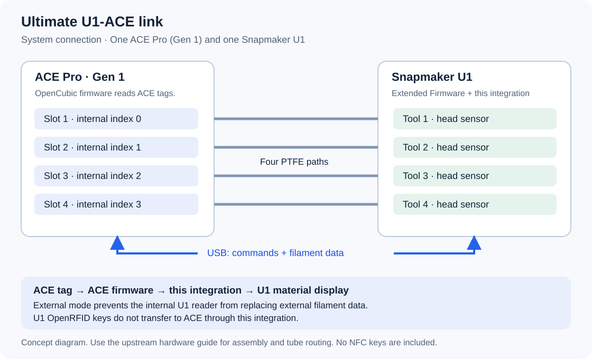

MANUAL INSTALLATION / 手动安装
Read the source and enter each command. This page does not execute anything.
本页提供完整英文命令步骤，不运行 Windows 向导；仍会使用可阅读的 printer installer.py。
中文说明 · English guideManual source installation
You can use this procedure without START-HERE.cmd or Install.ps1.
You enter the commands yourself and can inspect the source before execution.
This procedure still runs the open-source installer.py on the printer.
It is not an installer-free procedure.
Neither route requires AI, Codex, or an API key.
| Route | What you run | Guide |
|---|---|---|
| Optional Windows wizard | START-HERE.cmd, then Install.ps1 and the printer's installer.py | Guided installation |
| Manual source procedure | PowerShell, scp, ssh, and the printer's installer.py | This page |
| Preserved v0.1.0 | The original manual procedure with manual External selection | Version choices and fixed downloads |
The manual command sequence remains available in every release.
The current package includes MANUAL-INSTALL.html for offline reading.
The computer needs Windows PowerShell and OpenSSH.
It does not need Python or additional Python packages.
The printer uses its existing Python 3 interpreter and pyserial dependency.
Use OpenSSH scp with -O for the file transfers below.
The preflight check refuses a missing dependency instead of installing packages automatically.
1. Prepare the prerequisite projects
flowchart TD
FW[Install U1 v2.0.0-paxx12-24] --> Access[Enable Advanced Mode and Root Access]
Access --> ACE[Prepare compatible ACE Gen 1 firmware]
ACE --> Cable[Follow SnapAce hardware connection guide]
Cable --> Version{Project version?}
Version -->|v0.1.0| External[Select External manually]
Version -->|v0.1.1 or newer| Check[Review source and check the plan]
External --> Check
Check --> Install[Run installer.py]
Install --> Test[Calibrate and test one slot]
- Finish the current print.
- Save a private copy of your printer configuration.
- Download `v2.0.0-paxx12-24`.
- Install that release with the upstream installation guide.
- Enable Settings → Maintenance → Advanced Mode.
- Open Settings → Maintenance → Root Access.
- Set Root Access to Open.
- Restart the printer if its interface requests a restart.
- Reconnect the printer to Wi-Fi if necessary.
- Read the current address from the printer's Wi-Fi page.
Expected: the printer runs 2.0.0-paxx12-24, and its address opens the web interface.
Advanced Mode, Root Access, and persistence are separate controls.
Root Access enables SSH access, as described in the upstream SSH guide.
The installer manages the /oem/.debug persistence marker as part of its backed-up changes.
Firmware upgrades can remove that marker and system modifications. See data persistence.
- Check the ACE generation and firmware against the NFC baseline.
- Complete any required ACE firmware preparation with the ACE firmware guide.
- Prepare the cable with the SnapAce hardware guide.
- Connect the four PTFE paths to their matching U1 channels.
- Keep the machine idle for installation.
Do not perform the old SnapAce software-copy steps on U1 firmware 2.0.
This installer supplies the compatible replacement modules.
It does not automatically merge arbitrary edits in existing core files.

This diagram shows connections only.
It is not an assembly drawing or a source of cable dimensions.
External: select the instruction for your version
The option is named External.
extended is part of firmware and configuration names; it is not this reader option.
| Project version | Required action |
|---|---|
| v0.1.0 | Select External manually before check and install. |
| v0.1.1 / v0.1.2 | Leave the current selection unchanged; install sets and verifies External automatically. |
For v0.1.0, use these steps while the printer is idle:
- Open
http://<printer-address>/firmware-config/with the address from the printer screen. - Find Snapmaker Components → Filament Detection.
- Select External.
- Wait for the configuration change and Klipper restart to finish.
- Refresh the page.
- Confirm that External remains selected.
Expected: External is selected, and Klipper returns to ready.
The firmware applies the reader-service change through this control.
Changing a configuration word alone does not establish the correct service state.
In v0.1.1 and v0.1.2, check reports the planned External setting without applying it.
install backs up the previous setting and reader-service state before changing them.
It then verifies that the internal reader is disabled and OpenRFID is stopped.
External prevents competing U1 reader paths; it does not limit the ACE's supported tag brands.
See the upstream RFID design and this project's NFC guide.
2. Prepare Windows PowerShell
Obtain and inspect the source
Choose one complete version from the version and download page.
For this procedure, download v0.1.2 and inspect the current source.
Use its matching entry in SHA256SUMS.
The checksum applies to the named project archive, not GitHub's generated source ZIP.
Earlier archives, fixed checksums, and their original instructions remain on the version page.
A matching hash confirms the downloaded bytes match that published archive.
It does not replace your decision to trust or review the source.
- Open Windows PowerShell.
- Enter the downloaded project ZIP path.
$ArchivePath = Read-Host "Full path to the downloaded project ZIP"
- Calculate its checksum.
Get-FileHash -LiteralPath $ArchivePath -Algorithm SHA256
- Compare the result with the checksum for that exact archive.
- Stop if the checksums differ.
- Extract the matching archive into a new folder.
- Enter the extracted folder containing
installer.py.
$ProjectDir = Read-Host "Full path to the folder containing installer.py"
Set-Location -LiteralPath $ProjectDir
$ProjectDir = (Get-Location).Path
- Open the installer source for review.
notepad .\installer.py
- Open the manifest.
notepad .\manifest.json
- Inspect the four module files in
payloadwith your text editor.
| File | Purpose |
|---|---|
installer.py | Checks, backups, host-file changes, service handling, verification, and rollback. |
manifest.json | Supported firmware, module destinations, and accepted file hashes. |
payload/ace.py | ACE communication, NFC synchronization, and transport control. |
payload/filament_feed.py | U1 loading and unloading workflow. |
payload/filament_detect.py | Material retention and detection events. |
payload/extruder.py | U1 extruder integration. |
These are readable Python and JSON files.
The install command executes the inspected installer.py; it does not download another installer or flash either device's firmware.
Keep private backups and NFC keys outside the project folder.
- Check the required commands.
Get-Command ssh, scp
Expected: PowerShell lists both ssh and scp.
If either command is missing, enable OpenSSH Client in Windows Optional Features before continuing.
Confirm the connection
- Enter the printer address.
$PrinterAddress = Read-Host "Printer address from the Wi-Fi page"
- Set the SSH target.
$PrinterTarget = "root@$PrinterAddress"
- Check SSH access.
ssh $PrinterTarget "id"
Expected: the output includes uid=0(root).
SSH can request host-key confirmation on the first connection.
Confirm the intended printer before accepting its key.
Stop if SSH reports that an existing host key changed unexpectedly.
Enter the printer's SSH password when prompted; password characters are not displayed.
Do not put the password in a command or settings file.
The upstream SSH guide documents the factory credentials.
3. Prepare the local settings
- Copy the conservative template.
Copy-Item .\config\settings.example.json .\config\settings.local.json
- List the printer's serial device links.
ssh $PrinterTarget "ls -l /dev/serial/by-id/"
Expected: an ACE USB device appears in the list.
An absent or ambiguous device is a connection problem to resolve before installation.
Do not guess a /dev/ttyUSB or /dev/ttyACM number.
- Identify the ACE USB serial path from your hardware connection.
- Open the local settings file.
notepad .\config\settings.local.json
- Set
serialto the exact ACE device path. - Set transport values with the configuration guide.
- Keep
forward_takeup_lengthat0for initial calibration.
For v0.1.1 or v0.1.2, add "auto_detect_serial": false if you require the explicit serial value.
Do not add that option to v0.1.0, which requires the explicit serial path.
The current default can find one matching ACE automatically when no existing or custom serial choice applies.
JSON entries need separating commas; the final entry has no trailing comma.
- Set
calibrated_acknowledgedtotrueonly after you review the path measurements. - Save the file.
Expected: the JSON describes your connected ACE and measured paths.
The reference distances of 1250 mm and 1150 mm are not universal defaults.
The tested 300 mm forward take-up is optional; it has no tension feedback.
Existing ACE settings remain unchanged unless apply_existing_settings is true.
The installation plan shows the effective values before installation.
4. Transfer the project
- Set a new remote directory name.
$RemoteDir = "/userdata/ultimate-u1-ace-stage-" + (Get-Date -Format "yyyyMMdd-HHmmss")
- Copy the project to the printer.
scp -O -r "$ProjectDir" "${PrinterTarget}:$RemoteDir"
- Record the remote directory name.
$RemoteDir
- Confirm that the main files arrived.
ssh $PrinterTarget "ls '$RemoteDir/installer.py' '$RemoteDir/manifest.json' '$RemoteDir/config/settings.local.json'"
Expected: the three file paths appear without errors.
The transfer does not install the modules.
Each transfer uses a new directory.
Keep this PowerShell session open; subsequent commands use the same variables.
5. Check before installation
The printer must be idle, with no active print or filament operation.
All nozzle and bed targets must be zero, with actual temperatures below 50 °C.
The ACE dryer and feed assist must be off.
| Installation state | Required filament state |
|---|---|
| First installation | All four ACE inlets and all four U1 head sensors are empty. |
| Existing ACE update | Keep current filament positions and material data unchanged. |
Complete any necessary normal unloading before the cooling checks.
Do not unload all four slots merely to update an existing ACE installation.
First installation can clear stale material labels from confirmed empty slots.
The installer reports that change and requires three stable samples.
Stop active feed assist on an existing installation
This preparation applies only when an existing ACE installation reports active feed assist.
It does not require unloading all four slots.
ACE_DISABLE_FEED_ASSIST causes movement.
It stops feed assist, then requests a 5 mm retraction at speed 10.
The installer does not run this command automatically.
- Confirm that no print or filament operation is active.
- Open the printer's web console in Fluidd or Mainsail.
- Keep your hands away from the rollers.
- Run the command below.
ACE_DISABLE_FEED_ASSIST
- Wait for ACE to return to ready.
Alternatively, use the U1's normal Unload action for the active slot.
That alternative performs the complete configured unload cycle.
Repeat the cooling checks below after any unload cycle.
Finish the idle checks
- Set all heater targets to zero in the printer interface.
- Stop the ACE dryer if it is active.
- Wait until all nozzle and bed temperatures are below 50 °C.
On an existing ACE installation, ACE_STOP_DRYING stops the dryer through the web console.
- Read the current installation status.
ssh $PrinterTarget "cd '$RemoteDir' && python3 installer.py status"
Expected: JSON reports firmware: "2.0.0-paxx12-24" and klipper_state: "ready".
Before first installation, ace_version can be null, and managed can be false.
The current status also reports the reader mode, serial candidates, and existing ACE settings.
- Run the read-only check.
ssh $PrinterTarget "cd '$RemoteDir' && python3 installer.py check --settings config/settings.local.json"
Expected: compatible and read_only are true.
The effective_settings values must match your intended configuration.
Before installation, calibration_acknowledged must also be true.
In v0.1.1 and v0.1.2, filament_detection: "external" describes the plan; previous_filament_detection describes the current setting.
- Review
destinationsandeffective_settings. - Resolve every check failure before installation.
An unknown core-file modification is a stop condition.
Preserve your modified file before you arrange a compatible migration.
Do not replace it merely to bypass the check.
Neither status nor check changes printer files or starts an installation.
6. Install
- Confirm that the printer remains idle and cold.
- Clear the printer movement area.
- Run the installation command once.
ssh $PrinterTarget "cd '$RemoteDir' && python3 installer.py install --settings config/settings.local.json"
- Wait for the command to finish.
Expected: the command prints a backup identifier, then JSON containing installed: true and ready_samples: 3.
The backup is under /userdata/ultimate-u1-ace-link/backups/.
The printer can briefly show Klipper disconnected while its service restarts.
In v0.1.1 and v0.1.2, the result also reports filament_detection: "external".
The empty_slot_metadata_initialized field identifies any first-install empty-slot material reset.
- Save the reported backup identifier privately.
- Read the final status.
ssh $PrinterTarget "cd '$RemoteDir' && python3 installer.py status"
Expected: klipper_state is ready, managed is true, and ace_version matches the project's manifest.
For v0.1.1 and v0.1.2, internal_rfid_enabled and openrfid_running must be false.
The install command also verifies ACE readiness before reporting success.
It does not issue feed, retract, home, or heater commands for an installation test.
- Continue with the single-slot acceptance check.
If SSH disconnects during installation, do not repeat the install command immediately.
Reconnect with the same remote directory and read status first.
An interrupted connection does not establish whether installation succeeded or failed.
Keep the printer idle until the result is established.
If installation fails, check whether automatic rollback was verified.
Preserve the backup identifier and error message.
Use update and rollback for recovery, including unavailable-status recovery.
Use troubleshooting for a refused check or connection error.